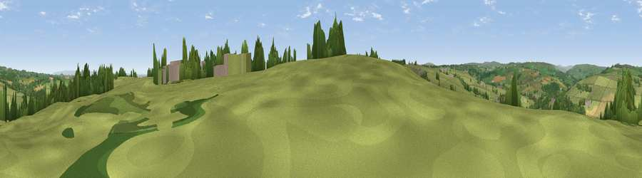

Viewpoint near Darley
#24273 in England · top 49% of its area beats it · near DarleyWhere it is
The exact computed spot (SE 22025 59075). Click the marker for map links.
The view, rendered

A 360° render of this exact spot computed from the terrain model, tree cover and land cover — summer colours, afternoon light, calibrated against photographs of famous viewpoints. Real trees, hedges and buildings will differ in detail.
The panorama
Grey silhouette: terrain skyline in each direction (720 bearings, Earth curvature and refraction included). Dashed green: skyline with trees (+15 m) and buildings (+8 m) as obstacles. Blue strip: how far the ground is visible on each bearing.
Where the view opens
Wedge length = distance to the farthest visible ground on that bearing (vegetation-aware). Rings at 10, 25 and 50 km.
What fills the view
83% grassland · 13% woodland · 2% cropland · 1% built-up
Angular shares of the visible panorama (visual magnitude), not map area. Landscape diversity 0.25 (0–1 Shannon).
Key numbers
More beautiful places nearby
The staircase of upgrades: each row has a higher view potential than everything closer. Driving times are estimates from straight-line distance, calibrated against real road routing — check an actual route before setting out.
| Place | Direction | Drive | Score |
|---|---|---|---|
| Viewpoint near Darley | S · 1 km | ~2 min | 52.3 |
| Viewpoint near Hampsthwaite | ESE · 5 km | ~10 min | 54.2 |
| Viewpoint near Summerbridge | NNW · 5 km | ~10 min | 62.0 |
| Viewpoint near Summerbridge | NNW · 5 km | ~11 min | 62.2 |
| Viewpoint near Summerbridge | N · 5 km | ~11 min | 66.0 |
| Viewpoint near Low Laithe | N · 6 km | ~13 min | 66.1 |
| High Crag Ridge | NW · 7 km | ~14 min | 67.6 |
| Viewpoint near Timble | S · 8 km | ~15 min | 68.1 |
54.02720, -1.66528 · source: screening · position refined by local search. Computed location — check access rights before visiting.